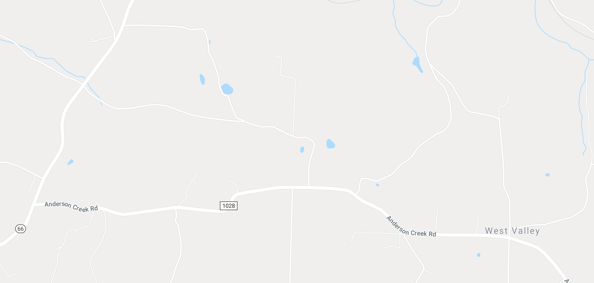

IZ
Along Route 28, in WesteRn Pennsylvania lies a small town called "Spaces CoRneRs". It's actually not much of a town at all. MoReso, it is a Reflection of RuRal life. TheRe is a abandoned school as you tuRn off the highway, sectioned off from the road by metal poles. Down the Road is a faRm with Rotating animals. Sometimes it's sheep and a minihorse, other times it's a single goat and a fat pig. Between each oddity rest abandoned houses and otheR residences. TheRe is a quiet about this place, each peRson keeping mostly to themselves. However, theRe is some amount of cuRiosity for a place called "Spaces CoRneRs". A poetic name for the countRy.
